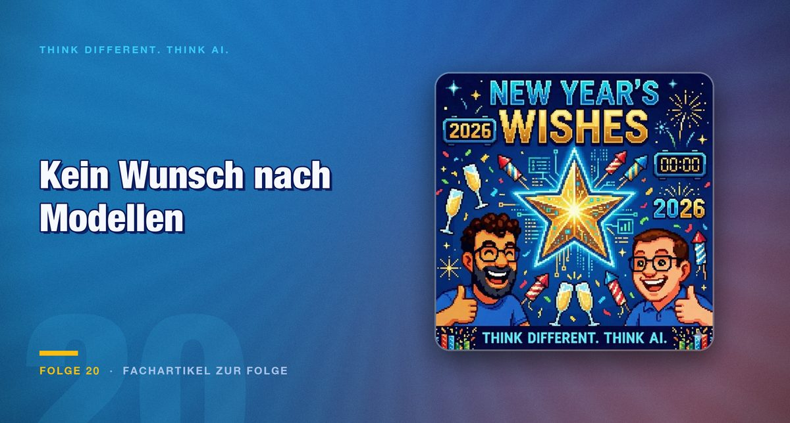

Episode 20 · Article on the episode
Not new models but better interfaces: what 2026 actually lacks
New models are coming anyway. What is missing are interaction patterns for waiting times, a form factor beyond the screen and agents that build their own workflows.

A look ahead at the year without the announcement of new models, because those are coming anyway. What follows are three wishes, and all three concern interfaces rather than capabilities.
Wish one: out of the screen
Smart glasses as a form factor are the first wish, and the appeal lies less in the device than in the channel. Interacting with AI multimodally and through conversation, permanently available, differs fundamentally from a chat window. The counter-model is bulky headsets such as Oculus or the Apple Vision Pro, which take the user out of their surroundings instead of leaving them in them.
How multimodal systems already are is shown by NotebookLM, which spontaneously generates whole conversational podcasts from text sources.
The second part of this wish is more concrete and is addressed to designers and developers: AI answers need new interaction patterns for waiting times, especially when a request is deliberately allowed to take longer because research or thinking is going on.
On top of that comes the wish for context-aware, permanently active behaviour without it turning into a data protection trap. That is the harder half, because both pull in the same direction: the more a system picks up, the more useful it is and the more it knows.
The EU AI Act as an occasion for design
From mid-2026 further obligations take effect. Companies must be able to explain in a traceable way how their agents act.
The assessment in the episode is remarkably unexcited: not a brake but an opportunity for well-designed, trustworthy systems. That is more than convenient optimism. An obligation to make things traceable forces logging and clear responsibilities, and both are needed anyway as soon as a system runs in production.
The outlook on the interplay of small local models with large cloud models fits with this. What runs locally produces no transmission of data and therefore less need for explanation.
Wish two: robotics without remote control
The starting point is a video of Tesla Optimus that went viral, in which a humanoid robot falls over during a demonstration. The real pointer in it concerns not stability but the question of how much in current humanoids is teleoperation rather than genuine autonomy.
That is the most important thing to check at any robotics demonstration. A remote-controlled robot shows what mechanics can do. An autonomous one shows what the system can do. The demonstrations do not always make it clear which variant is on show.
Also assessed are the remote-controlled Neo and vendors such as Figure AI, plus Apple's earlier research project of a movable Pixar lamp as a counter-model to the humanoid hype. The thought behind it deserves more attention: not every task demands human shape. The human form is practical because our environment is built for it, and otherwise it is a limitation.
For the German household both expect no humanoid robots in 2026, in the industrial environment further progress.
Wish three: no more building workflows
The most personal wish: in 2026 no longer having to build workflows, but describing problems and letting the system take care of the rest, including independently orchestrated multi-agent set-ups.
From this follows the central thesis of the episode: 2026 will be the year in which the shift from “a human interacts with an AI” to “an AI interacts independently with other AIs” becomes noticeable. Triggered by MCP servers, standardised interfaces and agents that build their own access routes when they need them.
The last half-sentence is the most remarkable one. An agent that writes a missing interface for itself gets around the chicken-and-egg problem that integration projects have failed on so far.
Conclusion
The outlook deliberately does without the wish for new models, and that is the actual statement. For some time now the bottleneck has no longer been capability but everything around it.
Two checkpoints follow for your own planning. First: does your interface hold attention while the system works? If so, you are giving away the productivity gain you paid for.
Second: can you explain how your agents arrive at their results? From mid-2026 that is no longer a question of quality but an obligation.
So no wish for a new model, but for better interfaces between human, machine and the many machines among themselves.